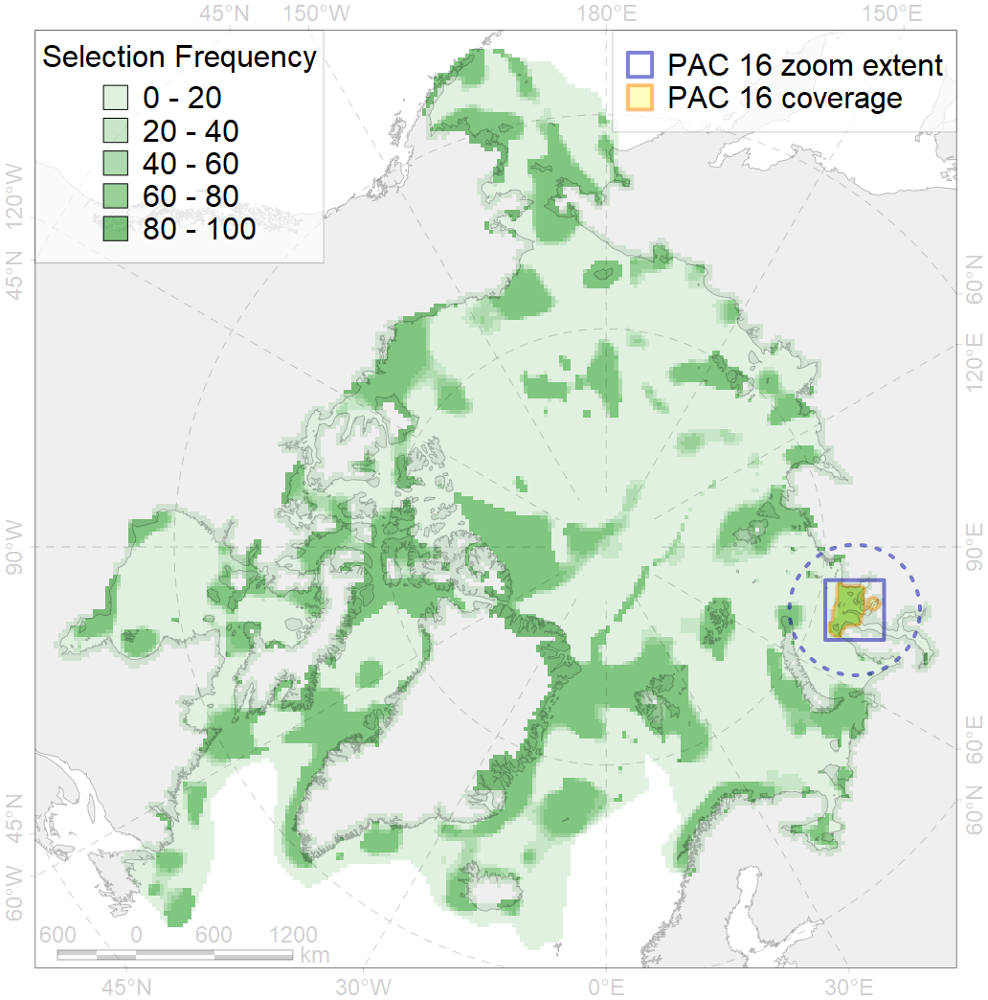
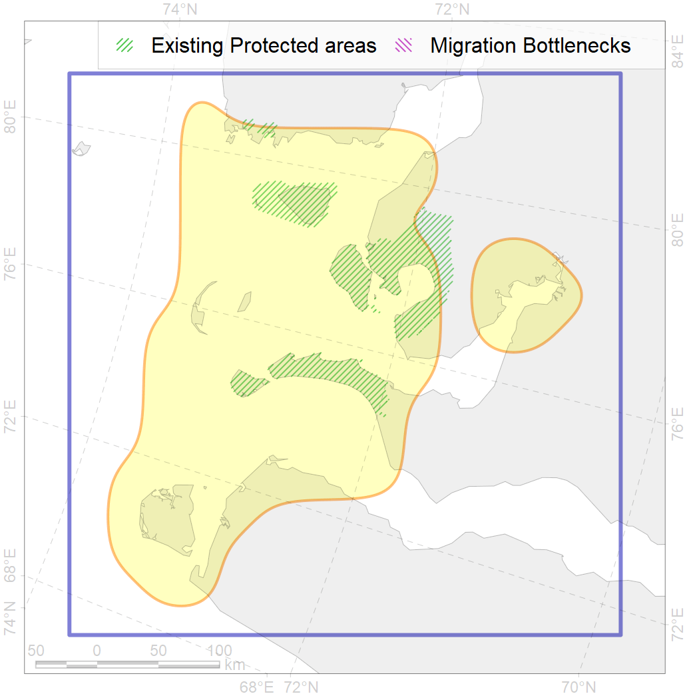

16
For more information regarding this PAC and to conduct custom spatial analysis using the PAC data or any spatial query, please consult Accenter.

0
CFs entirely within the PAC area
8
CFs at least 25% within the PAC area
9
CFs with their target entirely achieved in the PAC
16
CFs with at least 50% of their target achieved in the PAC
| CF ID | CF Name | Proportion in the PAC | Conservation Target | Contribution to ArcNet Target Achievement | PAC’s Contribution to the Achieved Target |
|---|---|---|---|---|---|
| 7013 | Benthic communities, Ob’-Yenissean Brackishwater Zoogeographic Province, core area | 58.9% | 29.3% | 188.6% | 93.4% |
| 3114 | Polynya biological communities, Kara Sea, mainland coastal region | 51.3% | 12.0% | 407.4% | 94.6% |
| 7112 | Benthic communities, II.1.1.6. Kara Sea Ob’-Yenissean estuarine region | 41.8% | 10.4% | 375.5% | 93.5% |
| 3011 | Fast ice biological communities, Western part of the Kara Sea | 38.0% | 6.0% | 574.6% | 87.5% |
| 4093 | Brackish water fish complex, Ob’ and Enissey rivers estuaries | 35.4% | 6.0% | 552.7% | 91.6% |
| 7100 | Benthic communities, II.1.1.1. Eastern Kara Sea coastal domain, outside of the Ob’-Yenissean Estuary | 30.4% | 13.3% | 213.3% | 79.1% |
| 6043 | Stellers eider (Polysticta stelleri) moulting / migration stopovers, Atlantic | 28.5% | 52.8% | 53.4% | 37.8% |
| 8033 | Biological communities, salt marshes, Kara Sea | 28.0% | 30.0% | 70.5% | 69.9% |
| 3116 | Polynya biological communities, Yamal Peninsula region | 23.5% | 12.0% | 187.7% | 64.5% |
| 6020 | Long-tailed duck (Clangula hyemalis) moulting / migration stopovers, eastern North Atlantic | 21.9% | 76.8% | 27.7% | 27.7% |
| 8026 | Biological communities, intertidal zone, Kara Sea | 20.5% | 18.0% | 113.7% | 45.5% |
| 2049 | Ringed seal (Phoca hispida) whelping grounds, Kara Sea | 18.5% | 24.0% | 72.0% | 38.0% |
| 6006 | Dark-bellied brent goose (Branta bernicla bernicla) breeding / moulting grounds | 17.0% | 18.0% | 91.2% | 28.4% |
| 9028 | Polar bear (Ursus maritimus), Kara Sea subpopulation, denning grounds | 14.0% | 52.8% | 25.9% | 25.8% |
| 7065 | Benthic communities, I.1.1.2. SW Kara Sea coastal domain | 11.7% | 16.3% | 66.9% | 51.4% |
| 4061 | Siberian sturgeon (Acipenser baerii) feeding / nursery grounds | 11.5% | 37.2% | 28.4% | 28.3% |
| 4010 | Muksun (Coregonus muksun) feeding grounds | 10.5% | 32.4% | 30.2% | 29.8% |
| 4043 | Nawaga (Eleginus nawaga) home range | 10.2% | 12.0% | 79.9% | 22.8% |
| 2011 | Bearded seal (Erignatus barbatus) whelping grounds, Kara Sea | 9.1% | 24.0% | 35.7% | 34.9% |
| 4015 | Broad whitefish (Coregonus nasus), American populations, feeding grounds | 8.9% | 32.4% | 25.6% | 21.9% |
| 1007 | Walrus (Odobenus rosmarus rosmarus) haulouts, Pechora and Kara region | 8.7% | 96.0% | 9.1% | 8.8% |
| 3027 | MIZ biological communities, April, Kara Sea | 8.2% | 12.0% | 64.7% | 16.6% |
| 4014 | Siberian whitefish (Coregonus pidschian) feeding grounds | 7.8% | 24.0% | 30.6% | 19.3% |
| 3038 | MIZ biological communities, July, Kara Sea | 7.8% | 24.0% | 31.3% | 24.4% |
| 4021 | Inconnu (Stenodus leucichthys nelma), Eurasian populations, feeding grounds | 7.0% | 32.4% | 20.4% | 17.2% |
| 4052 | Fourhorn sculpin (Myoxocephalus quadricornis), American populations, home range | 6.5% | 3.0% | 203.6% | 14.1% |
| 4018 | Vendace, Least cisco (Coregonus sardinella), Eurasian populations, feeding grounds | 6.3% | 24.0% | 24.4% | 12.8% |
| 4008 | Arctic cisco (Coregonus autumnalis), Eurasian populations, feeding / nursery grounds | 6.1% | 38.4% | 14.9% | 14.0% |
| 6097 | Ivory gull (Pagophila eburnea) breeding colonies foraging range buffer, Kara Sea | 5.8% | 43.2% | 12.7% | 12.7% |
| 5007 | Beluga (Delphinapterus leucas), Barents-Kara-Laptev Seas stock, home range | 4.7% | 24.0% | 18.1% | 12.1% |
| 4030 | Arctic charr (Salvelinus alpinus), European anadromous populations, feeding grounds | 4.1% | 38.4% | 9.9% | 8.7% |
| 9010 | Polar bear (Ursus maritimus), Kara Sea subpopulation, home range | 3.9% | 26.4% | 13.9% | 13.6% |
| 4006 | Pacific rainbow smelt (Osmerus dentex) feeding / nursery grounds | 3.6% | 18.0% | 19.1% | 7.2% |
| 4076 | Fish communities, North Barents - Kara Seas Zoogeographic District, High Arctic Shelf Province, Arctic Region | 3.0% | 7.1% | 39.2% | 10.1% |
| 4072 | Pacific herring (Clupea pallasii suworowi) home range, Pechora Sea | 2.9% | 12.0% | 24.0% | 6.8% |
| 4058 | Arctic flounder (Liopsetta glacialis) home range | 2.8% | 6.0% | 43.9% | 5.7% |
| 7035 | Benthic communities, Siberian shelf Zoogeographic region | 2.2% | 8.6% | 23.5% | 6.7% |
| 7046 | Benthic communities, Transitional Zoogeographic zone, western Kara Sea | 1.8% | 15.2% | 11.1% | 11.0% |
| 7109 | Benthic communities, II.1.1.3. Kara Sea middle and outer eastern shelf | 0.9% | 5.6% | 15.0% | 7.8% |